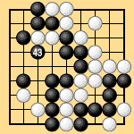
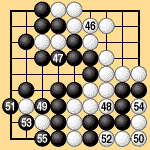

| 6.4 Bent Four in the Corner |
|---|
| In Dia. 6-8-1, under area rules III White passes after Black 43. Both sides can then eliminate ko threats without incurring any loss, so White can capture the black bent four in the bottom right corner. Due to the half-point rule the game ends in a draw at 40 1/2 apiece. |
|  |
| Dia. 6-8-1 (43) |
|---|
| Under territory rules I, the game ends as in Dia. 6-8-2. White 44 and Black 45 pass, establishing the preliminary end of the game. The players can now play inside their own territory without losing anything, and do so with White 46 to Black 55. Then White 56 and Black 57 pass again, ending the game. The result is a draw, the same as under area rules III. This result also agrees with the traditional Japanese rule that bent four in the corner is unconditionally dead. |
|  | |
|